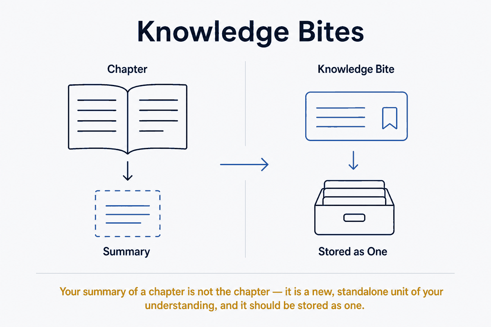

Your summary of a chapter is not the chapter — it is a new, standalone unit of your understanding, and it should be stored as one.

When you summarize a chapter in your own words, you are not representing the chapter — you are producing a new thing: your understanding of it, as a standalone unit of knowledge. That thing is a knowledge bite: an atomic, self-contained note holding one idea, written in your words, with frontmatter that lets it be tagged, queried, and resurfaced. One source can spawn many of them — one per chapter, or one per idea — and together they form a Zettelkasten grown out of your reading.
This is the second, deeper half of the sidecar idea. It looks like a sidecar — markdown beside a source — but it does a fundamentally different job, and keeping that difference sharp is what makes both patterns work.
A representation sidecar stands for the source: OCR text and bibliographic frontmatter that make the PDF searchable, one-to-one with the original. A distillate sidecar — a knowledge bite — is your thought about the source: a summary, an insight, a connection, written by you.
The distinction is not cosmetic; the two have opposite natures:
In the terms of this vault's own concepts: a representation is like OCR — mechanical. A distillate is articulation — the summary you write is the learning, in a way the extracted text never is. Filing them as one type blurs mechanical extraction and personal thought, and you lose the ability to tell "what the source says" from "what I concluded." Keep them explicitly apart — a distinct type (e.g. knowledge-bite vs representation), and likely separate folders.
The value isn't in the one-per-chapter mapping — it's in each note being a real Zettelkasten unit. Three properties do the work:
The shift is subtle but decisive: "a sidecar per chapter" organizes by the source's structure; a knowledge bite organizes by ideas, and merely remembers which source it came from. The chapter is where it was born, not where it lives.
This is where the bites stop being filing and become fuel. A knowledge bite is exactly what Continuous Learning resurfaces — the daily bite brought back under your attention is one of these. Because each carries frontmatter, it can be tagged, queried, and picked up by spaced repetition on its own schedule.
So the full chain closes:
source → distillate sidecar (knowledge bite) → Continuous Learning → Spaced Repetition.
A book you read once becomes a set of atomic ideas in your words, which your system feeds back to you over time until they're yours for good. Reading stops being a one-pass event and becomes durable knowledge — and the bite is the unit that carries it through every stage. This is the join between document processing and learning: the same markdown note that distills a chapter is the thing your learning system studies you on.
The two layers coexist over one source without competing. A scanned book gets a representation sidecar (whole-book, searchable, bibliographic) and a scatter of knowledge bites (per idea, in your words, linked). The representation makes the book findable; the bites make its ideas yours. Same source, two kinds of markdown beside it, each doing what only it can — and both, having frontmatter, are first-class governable vault citizens under the same publish/private gates as everything else.